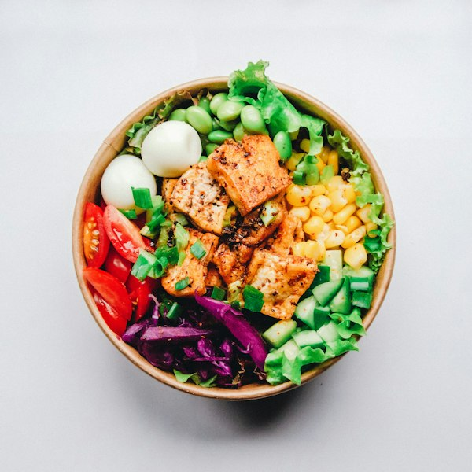
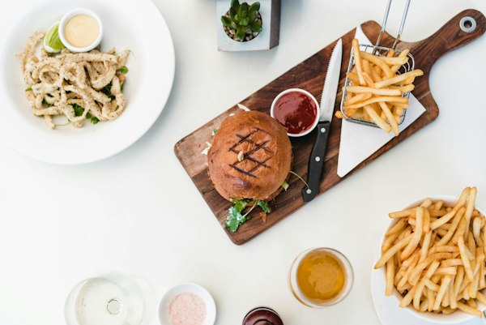

Kehangatan Soto Kudus Asli
di Tengah Sejuknya Taman
Soto Kudus Kedai Taman (SODUS) menghadirkan kenikmatan soto kudus otentik dengan racikan kuah kaldu rempah gurih kekuningan, ayam kampung pilihan, dan taburan bawang putih goreng yang harum semerbak. Disajikan dalam mangkuk porselen khas dengan suasana santap hijau, asri, dan teduh di kawasan Gayungsari, Surabaya.
SODUS Kedai Taman
Kuliner Soto Kudus & Masakan Nusantara Sejak Pagi


Kenapa Harus Mencicipi Soto Kudus Kedai Taman?
Berasal dari kota kretek Kudus, Jawa Tengah, soto kudus memiliki kekhasan kuah kaldu rempah bening yang tidak menggunakan santan berat, melainkan perpaduan bawang putih goreng, kemiri, ketumbar, dan jahe yang menghasilkan rasa gurih ringan namun sangat kaya rempah.
Di Kedai Taman, kami merawat resep otentik ini dengan sentuhan suasana alam yang menenangkan. Pengunjung dapat menikmati hidangan hangat ditemani rindangnya pepohonan taman, semilir angin sepoi-sepoi, dan keramahan khas Nusantara.
Tradisi Mangkok Kecil Berkuah Panas
Ukuran mangkok porselen khas menjaga kuah soto tetap hangat dari suapan pertama hingga tetes kuah terakhir.
Aneka Lauk Baceman & Sate Pendamping
Sate telur puyuh, sate ati ampela, sate usus bumbu kuning, perkedel kentang lembut, dan tempe bacem legit.
Ruang Makan Bersih, Asri & Ramah Keluarga
Dilengkapi area makan indoor maupun semi-outdoor taman yang luas, cocok untuk kumpul keluarga dan relasi kantor.
Galeri Suasana & Hidangan
Intip kelezatan semangkuk soto kudus hangat, lauk baceman menggiurkan, dan ketenangan suasana taman asri di Kedai Taman Surabaya.




Kunjungi & Hubungi Kedai Taman
Berada di lokasi yang strategis di Surabaya Selatan, mudah dijangkau dari arah Masjid Nasional Al-Akbar, Graha Pena, maupun Tol Menanggal.
Soto Kudus Kedai Taman
-
Alamat Lengkap
Jl. Gayungsari Timur No. 7, Menanggal, Kec. Gayungan, Kota Surabaya, Jawa Timur 60234 (Kawasan Masjid Agung Al-Akbar Surabaya)
-
Jam Operasional
Buka Setiap Hari: Pukul 06.00 – 22.00 WIB (Pagi untuk sarapan hingga malam hari)
-
Kontak Telepon & WhatsApp
Telepon: (031) 8298832
WhatsApp / Seluler: 0851-5851-5332 -
Fasilitas Kedai
Area Parkir Luas, Suasana Taman Terbuka & Indoor, Musholla, Toilet Bersih, Meja Santai Keluarga, Pembayaran QRIS & Tunai.
Peta Lokasi Kedai Taman Surabaya
Gayungsari, SurabayaPesan Praktis Melalui Aplikasi Online Delivery
Cari "Soto Kudus Kedai Taman - Gayungsari" pada aplikasi favorit Anda:
Reservasi Meja / Pesan Katering
Silakan kirimkan permohonan reservasi tempat atau pertanyaan seputar katering acara Anda: